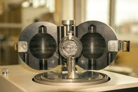
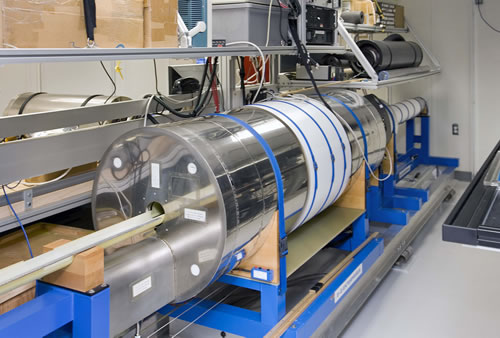
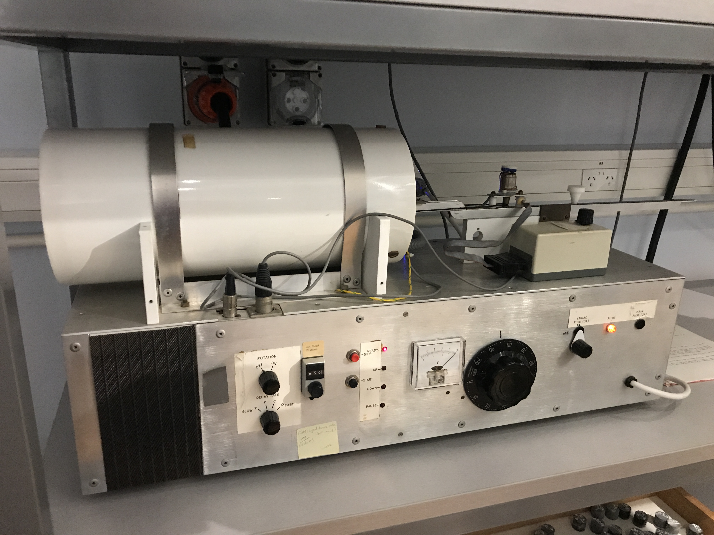

←
Testing the Earth
soon
The following images and texts
showcase tests with earth material in lab conditions.
 De-magnetiser at the Geophysics Lab, TU Delft.
De-magnetiser at the Geophysics Lab, TU Delft.

Spinner magnetometer, Utrecht. Setup will be used for adjusting the remnant magnetic field of mineral sample.

Cryogenic magnetometer, Utrecht. This will also be tested for extreme magnetisation of minerals with low permeabilty.

De-magnetiser for smaller samples, Utrecht.